The complete tote swing
19 timeline frames, 2.23 seconds. Original pixels and colors from the earlier chat, ready to inspect or trace one at a time.
Open clean sequence Open smear sequence
These are copies of the existing layered animation sources, with all frames and timing intact. Save your own copy before editing. They do not have the beginner starter’s Guide or Corrections layers.
The canvas is 256 × 208 to leave room for the bag swing. The standing character is still 183 pixels high; bent poses naturally change visible height. Nothing was fitted or resized frame by frame. Frame 19 repeats frame 1 for the return. Only frame 9 differs between clean and smear.
Watch, then choose one drawing
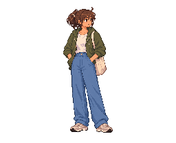


Frame 2 correction exercise: compare current versus converted reach, then open the separate clean animation copy with frame 2 replaced. All other frames and timing are preserved; select frame 2 and the top Corrections layer.

All six originals: script-only correction workbook
Open six-pose Aseprite workbook · How to correct it
Idle → reach → strap grip → windup → swing → recovery. Same shared source scale and colors, with no new AI redraw or in-between generation. This separate six-key study uses 400 ms holds. The existing 19-frame animation remains intact.
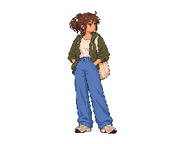

How to use these
For automation and correction, open the clean native sequence, select the numbered frame in the Timeline, and add a new layer for your corrections. Layers are rows; frames are columns. Play the sequence to see how your change reads beside its neighbors.
For hand tracing another pose, open that frame’s PNG in Aseprite, save a new native copy, name its image layer Guide, lock it and lower its opacity. Add a blank drawing layer above it. The PNG is a full-opacity color reference; sample from the original palette or a separate full-opacity tab, rather than the faded guide. Keep this new document at 256 × 208 so the pose is not cropped.
Start with the clean pose. The brief smear is deliberately distorted for motion, so it is a later study. You can continue today’s tote-contour exercise in the separate one-pose starter; extracting the whole sequence does not require drawing every frame now. Ask the teacher about any frame or transition that looks unclear.
Every timeline slot
01 · idle
180 ms · Clean PNG · Smear PNG


02 · reach
100 ms · Clean PNG · Smear PNG


03 · free hand


04 · shoulder clearance


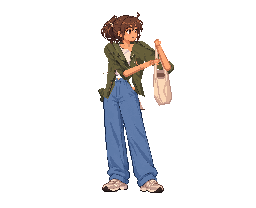
05 · two hand gather
100 ms · Clean PNG · Smear PNG


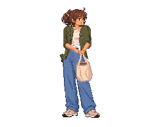
06 · counter step


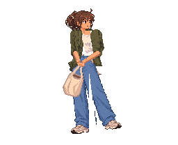
07 · windup
130 ms · Clean PNG · Smear PNG


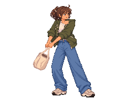
08 · launch


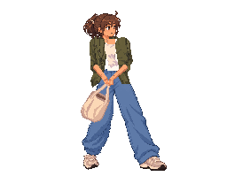
09 · outbound transit


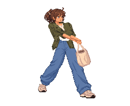
Smear alternative (same frame slot):
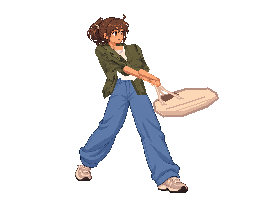
10 · contact


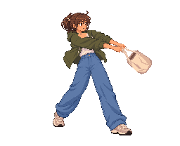
11 · overshoot


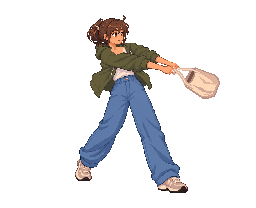
12 · arrest
100 ms · Clean PNG · Smear PNG


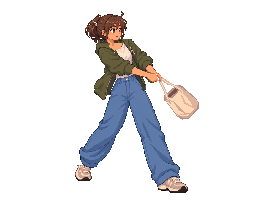
13 · rear foot plant


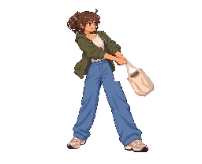
14 · front step gather
100 ms · Clean PNG · Smear PNG


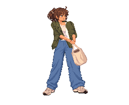
15 · inward gather
100 ms · Clean PNG · Smear PNG


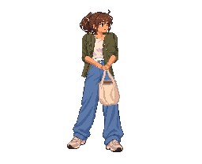
16 · re shoulder lift
100 ms · Clean PNG · Smear PNG


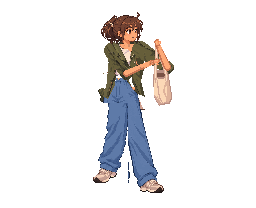
17 · shoulder support
110 ms · Clean PNG · Smear PNG


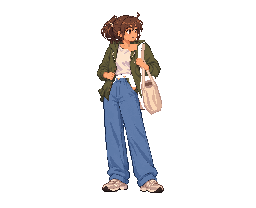
18 · strap settle
100 ms · Clean PNG · Smear PNG


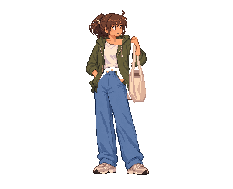
19 · idle return


Provenance: earlier smear chat · copy hashes and verification · original timing. Existing provisional animation; no new Godot run or visual approval is claimed.